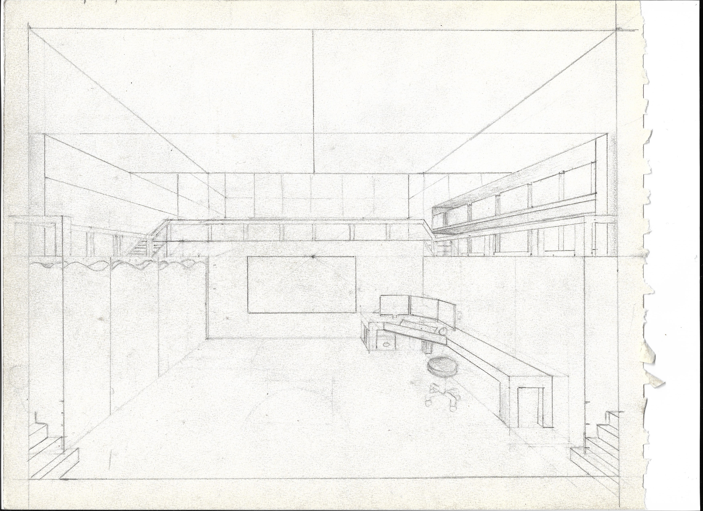

Hello, my name is Wayne Landon Hearns II and my blog is going to be about Concept art. Ever since I was a child I have loved drawing, and as I got older, I realized that there were a lot of routes you can go with drawing. You can go animation, graphic design, Industrial design, Environmental or Comics, but I realized I had passion for being a Monster concept artist/digital illustrator. That is my passion and that is my main goal so I thought it would be cool to post about other different amazing concept artists to motivate others and to share different work from great concept artist that are in the industry. In the world of Art when it comes to a lot of forms of media such as movies, video games, animation, etc., Concept Art is the beginning visual thought process behind the final piece. A simpler description is that concept art is the initial blueprint to a concrete idea. In a video game “production line” the first step starts with concept, which is then led by design, pre-production, and post production. Concept art might be the most important stage of a project because like everything in life, it all starts with an “Idea”. Everything we love in video game, and or animation entertainment starts with an idea, whether it's a idea of a weapon, or an environment or even a character, it must start with a blueprint. Many projects from different popular media companies such as Riot Games, From Software, Blizzard entertainment is popular today because there was first an idea that became loved by their audience. Nothing could have been made without the concept of it. Not only will Concept Art be the main topic of this blog but also the finished digital illustrations of some of our favorite characters in video games and in animation. When it comes to the concept art of one's idea nothing always finishes the way it starts. Ideas might evolve and transform into something bigger and better as time moves on. I've seen many instances where a character, weapon or even environmental concept art had gotten updated and completely changed from its original idea and the craziest part is a lot of the audience mostly sees the finished product but when it comes to the very first concept ideas behind a finished product and how many different changes went into the ideas, the audience barely ever sees them. When in reality, it was the concept that sparked the very idea to make the final. Great visual concept artists for the games we love like Elden ring, Monster Hunter, League of legends and Little Nightmares are amazing people that start the process of some of the most amazing visual art that we have ever seen. One of the main things we will go over in this blog is the beginning concept arts of our favorite medias. In the artist world, many artists face a lot of hard nights, risk of being burnt out, and the biggest problem is lack of motivation. I myself lack the motivation and struggle with finishing ideas I have because of lack of drive, skill or sometimes just life gets in the way. The art industry is not an easy field to get into and is very competitive because of the amount of people going into that field, but I personally wouldn't choose any other passion or field to make my career. Art is my utmost passion and something I will pursue for all eternity, even though art/design is a hard field to be successful in, it's not impossible. One of the primary things people just need is the drive and motivation to keep producing art and adding to their portfolio. So, the main primary purpose for this blog is to help motivate artist and to look at fresh Ideas from great artist around the world.
Wayne Hearns Concept Art - Underground Labatory by Wayne Landon Hearns II
